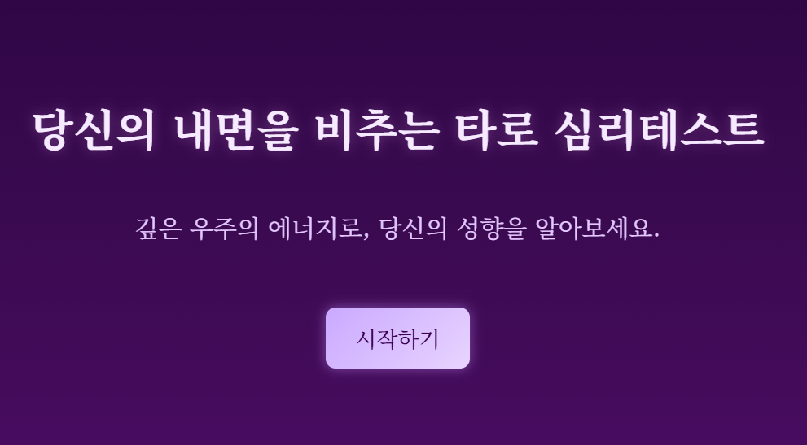
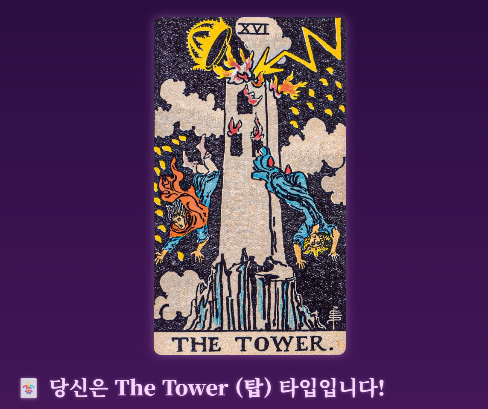

프로젝트 소개
Tarot Mind Test는 메이저 아르카나 타로 카드의 상징을 활용하여
사용자의 성격과 내면을 해석하는 웹 기반 심리테스트입니다.
사용자 경험을 직관적으로 설계하고, 타로 카드를 통한 결과 도출 및 감성적인 UI 디자인을 통해 몰입감을 극대화했습니다.
- 🌞 직관적인 UX
- 📜 타로 카드 기반 결과 도출
- 📱 모바일 반응형
특징 및 검사 내용
Tarot Mind Test는 다양한 질문 유형을 통해
사용자 내면의 깊은 심리를 탐구합니다.
각 질문은 타로 카드의 상징과 연결되어 있으며,
이를 바탕으로 다채로운 심리 분석 결과를 제공합니다.
- ❓ 객관식, 주관식, 직관 선택형 질문 포함
- 🔮 메이저 아르카나 타로 카드와 연계된 결과 도출
- 📈 개인별 심층 심리 프로파일 생성
- ✨ 감성적이고 몰입감 높은 UI 디자인
미리보기

테스트 시작 화면

타로 결과 화면